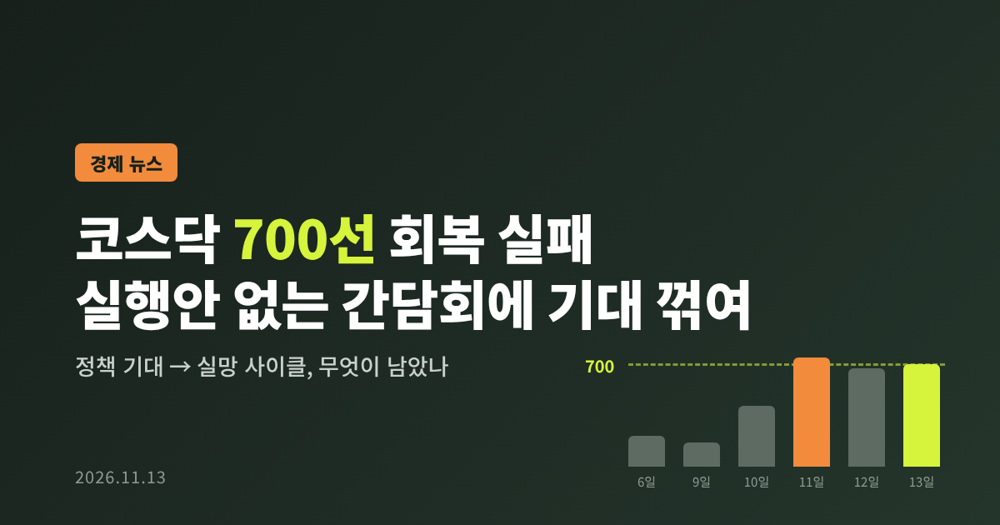
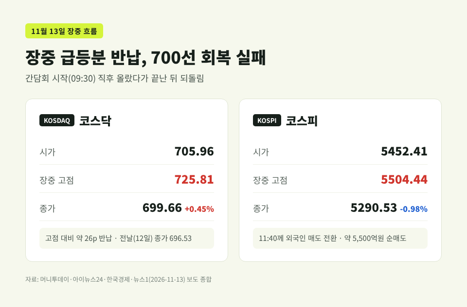
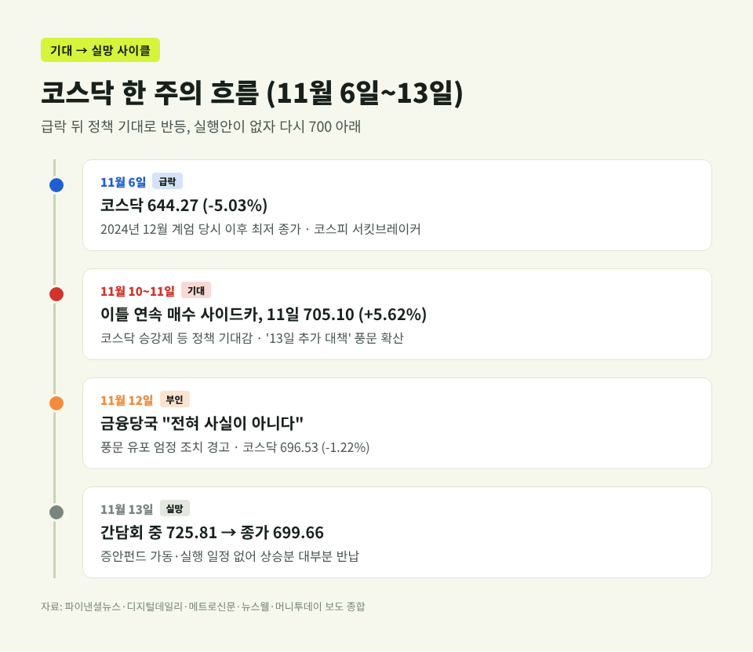
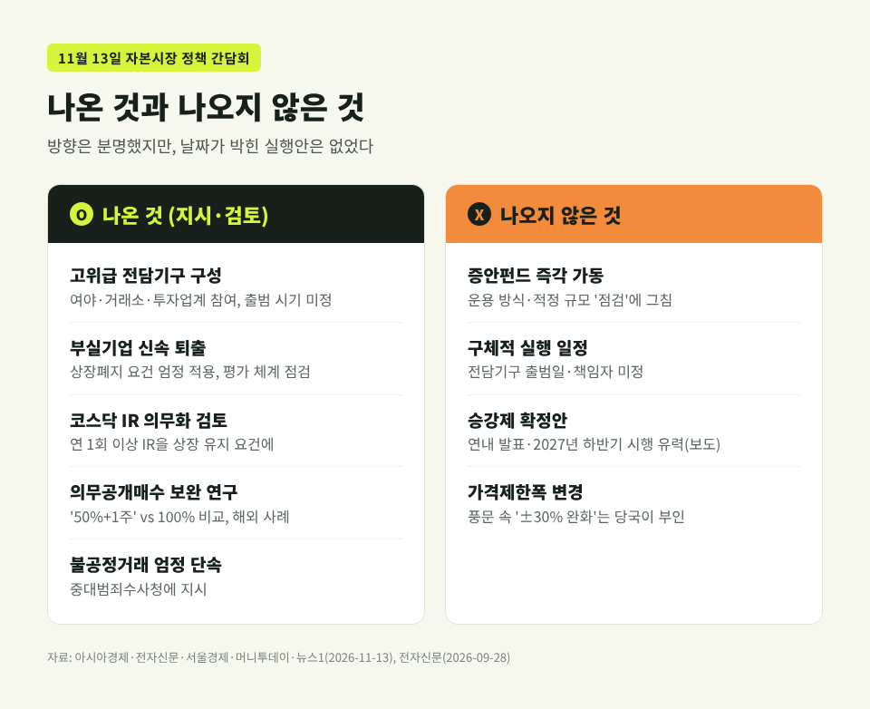
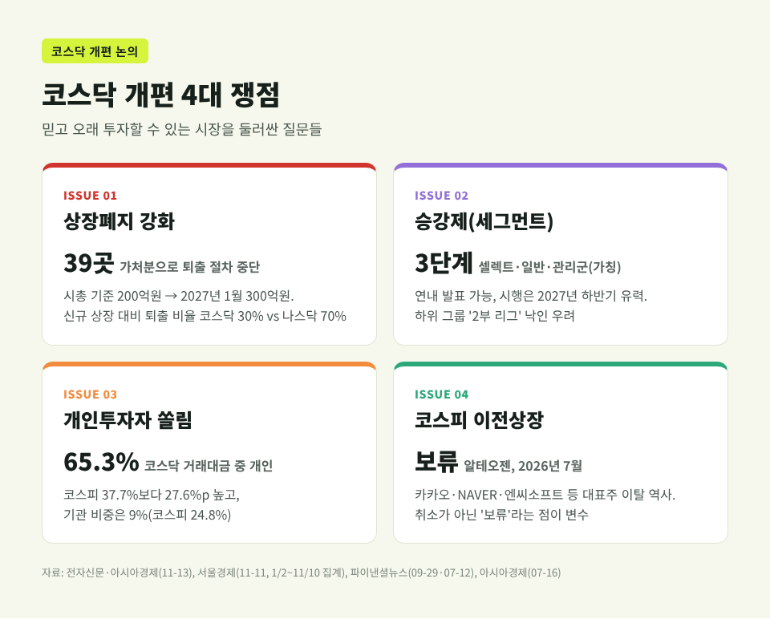
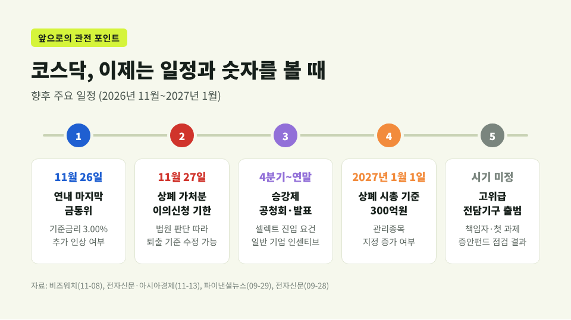

코스닥 700선 회복 실패, 실행안 없는 자본시장 간담회에 기대 꺾여

이번 글에서는 11월 13일 대통령 주재 자본시장 정책 간담회 전후로 코스닥이 크게 출렁인 일을 정리해 보겠습니다. 기대가 어디서 생겼고 왜 꺼졌는지, 그리고 코스닥 개편 논의가 어디쯤 와 있는지를 차례로 짚습니다.
세 줄 요약
- 코스닥은 11일 정책 기대에 5.62% 급등해 705.10을 기록했지만, 12일 다시 700 아래로 내려왔습니다.
- 13일 간담회 도중 725.81까지 올랐다가 증시안정펀드 가동 같은 실행안이 나오지 않자 상승분을 대부분 반납하고 699.66에 마감했습니다.
- 코스피는 외국인 매도와 엔비디아 CEO 사임 충격이 겹쳐 0.98% 내린 5290.53으로 끝났습니다.
■ 13일 하루, 코스닥에 무슨 일이 있었나
13일 오전 9시 30분, 서울 여의도 한국거래소에서 이재명 대통령 주재 자본시장 정책 간담회가 열렸습니다. 주제는 "신뢰받는 자본시장, 현장에서 묻고 답을 찾다"였습니다.
코스닥은 705.96으로 출발했습니다. 대통령 모두발언이 이어지자 상승폭이 커졌고, 오전 11시 무렵에는 725선까지 올랐습니다. 머니투데이 집계로 이때 코스닥 1,749개 종목 가운데 1,343개, 약 76%가 오르고 있었습니다.
분위기는 오래가지 않았습니다. 간담회가 끝난 뒤 상승분이 빠르게 빠졌고, 지수는 전날보다 3.13포인트(0.45%) 오른 699.66에 마감했습니다. 숫자만 보면 상승이지만, 장중 고점 725.81에서 약 26포인트를 내준 셈입니다. 결국 700선 회복에는 실패했습니다.
코스피는 더 아팠습니다. 5452.41로 2% 넘게 오르며 출발해 장중 5504.44까지 갔습니다. 그런데 오전 11시 40분께 외국인이 순매도로 돌아섰고, 지수는 52.20포인트(0.98%) 내린 5290.53으로 장을 닫았습니다. 외국인 순매도 규모는 매체에 따라 5,475억원(머니투데이·이투데이)과 5,505억원(아이뉴스24)으로 조금 다르게 집계됐습니다.

■ 기대는 어디서 시작됐나
출발점은 한 주 전의 급락입니다. 11월 6일 코스닥은 5.03% 떨어진 644.27로 마감했습니다. 2024년 12월 계엄 사태 무렵 이후 가장 낮은 종가였습니다. 같은 날 코스피도 6.02% 급락했고, 장중 4911선까지 밀리며 서킷브레이커가 발동됐습니다.
고점과 비교하면 낙폭은 더 선명합니다. 코스닥은 4월 27일 장중 사상 최고치 1,229.42에서 6일 기준 약 48% 내려왔습니다. 코스피 역시 6월 22일 역대 최고 종가 9,114.55와 비교하면 13일 종가가 42% 낮은 수준입니다. 보도에 따르면 글로벌 AI 산업에 대한 투자심리 악화와 금리 상승 환경이 주된 배경으로 꼽혔습니다.
반등은 10일부터 시작됐습니다. 10일과 11일 이틀 연속 코스닥 매수 사이드카가 발동됐습니다. 11일에는 37.49포인트(5.62%) 오른 705.10으로 마감해 4일 이후 처음 700선을 되찾았습니다. 시장에서는 정부와 거래소가 추진하는 '코스닥 승강제' 도입 기대가 투자심리를 끌어올렸다는 분석이 나왔습니다.
여기에 풍문이 기름을 부었습니다. 11일부터 인터넷과 SNS에는 "정부가 13일 코스닥 추가 대책을 발표한다"는 글이 퍼졌습니다. 가격제한폭(현행 ±30%) 완화, 개인투자자 거래 활성화, 저PBR 기업 대책 같은 내용이 덧붙었습니다.
금융위원회와 금융감독원은 12일 보도참고자료를 내고 "전혀 사실이 아니다"라고 밝혔습니다. 근거 없는 풍문 유포는 자본시장법상 불공정거래가 될 수 있고, 위법이 확인되면 엄정 조치하겠다는 경고도 붙였습니다. 코스닥은 그날 1.22% 내린 696.53으로 하루 만에 700선을 다시 내줬습니다.
그래도 13일 간담회 자체는 예정대로 열렸습니다. 대통령이 직접 거래소를 찾는다는 사실이 '뭔가 나올 것'이라는 기대를 되살린 것으로 보입니다.

■ 간담회에서 나온 것, 나오지 않은 것
간담회에서 나온 메시지는 분명했습니다. 대통령은 "자본시장 정상화는 우리 정부의 확고한 정책 방향"이라고 말했습니다. 부실·저성과 기업은 상장폐지 요건을 제대로 적용해 신속히 퇴출해야 한다고 했습니다. 동시에 기술력과 성장성이 있는 기업이 피해를 보지 않도록 진입·퇴출·평가 체계 전반을 점검하라고 주문했습니다.
구체적으로 거론된 과제는 이렇습니다.
- 고위급 전담기구 구성: 여야·거래소·투자업계가 참여해 실태조사와 입법·제도 개선 과제를 정리합니다. 대통령은 "좀 방심했던 측면이 있다"며 늦었다고 인정했습니다.
- 코스닥 IR 의무화: 정은보 거래소 이사장이 연 1회 이상 기업설명회를 상장 유지 요건에 넣는 방안을 검토 중이라고 밝혔습니다.
- 의무공개매수: 지분 25% 이상 확보 시 '50%+1주'까지 공개매수를 의무화하는 개정안이 9월 국회 법사위를 통과했습니다. 대통령은 100% 매수안과 비교할 연구와 해외 사례를 요청했습니다.
- 불공정거래 단속: 중대범죄수사청에 엄정 단속을 지시했습니다.
시장이 기다린 것은 따로 있었습니다. 증권시장안정펀드(증안펀드)의 즉각 가동, 혹은 날짜가 박힌 실행 계획입니다.
증안펀드는 현장에서 직접 건의됐습니다. 김진욱 한국씨티은행 수석이코노미스트는 가동 신호만으로도 변동성을 줄일 수 있다고 했습니다. 대통령은 시장 개입이 오히려 불신을 키울 수 있다며 운용 방식과 적정 규모를 점검하자는 선에서 정리했습니다. 이억원 금융위원장도 증안펀드는 긴급 상황에서 한시적·예외적으로 쓰는 수단이라고 선을 그었습니다.
대신증권 이경민 연구원은 단기 시장안정 대책에 대한 기대를 채우기에는 "제한적"이었다고 평가했습니다. 업계 반응도 비슷했습니다. 뉴스1에 따르면 전담기구는 중장기 로드맵의 계기로 반기면서도, 증시 안정책이 빠진 점은 아쉬워했습니다.

■ 같은 날 겹친 악재들
코스피 하락을 간담회 탓으로만 돌리기는 어렵습니다. 같은 날 바깥 변수가 여럿 겹쳤습니다.
첫째, 엔비디아입니다. 미국 현지시간 12일 엔비디아 이사회는 젠슨 황 CEO가 CEO와 이사직에서 물러났다고 발표했습니다. 콜레트 크레스 최고재무책임자가 임시 CEO를 맡았고, 회사는 공식 사유를 밝히지 않았습니다. 엔비디아 주가는 장중 13~14%대 급락했다가 낙폭을 줄였습니다(매체별로 장중 낙폭 집계가 다릅니다). 국내에서는 SK하이닉스가 3.03%, 삼성전자가 0.96% 내렸고, 반도체 소부장주도 약세였습니다.
둘째, 유가와 금리입니다. 트럼프 미국 대통령의 이란 협상 관련 발언 이후 유가와 미국채 금리가 뛰었습니다. 전기·가스 업종이 7%대 떨어졌고 항공주도 약했습니다. 한국전력은 3분기 영업이익이 시장 기대를 크게 밑돌면서 9.39% 하락했습니다.
셋째, 환율입니다. 원·달러 환율은 6.0원 오른 1336.7원으로 마감해 5거래일 만에 반등했습니다. 이투데이는 밤사이 중동 긴장에 따른 유가·금리 급등과 젠슨 황 이슈에 따른 달러 강세를 원인으로 전했습니다.
■ 코스닥 개편 논의, 쟁점은 무엇인가
이번 출렁임의 밑바닥에는 오래된 질문이 있습니다. 코스닥은 왜 믿고 오래 투자하기 어려운 시장이 됐는가 하는 것입니다.
① 상장폐지 강화 금융위와 거래소는 올해 2월 상장폐지 개혁방안을 내놨습니다. 코스닥 시가총액 기준은 7월 150억원에서 200억원으로 올랐고, 2027년 1월부터는 300억원이 됩니다. 문제는 법원입니다. 서울남부지법이 10월 일부 기업의 상장폐지 효력정지 가처분을 받아들이면서, 퇴출 절차가 막힌 기업이 39곳에 이릅니다. 김우찬 거래소 코스닥시장위원장은 코스닥의 신규 상장 대비 퇴출 비율이 30%에 그친다고 했습니다. 코스피는 60%를 넘고 나스닥은 70%, 도쿄와 뉴욕증권거래소는 100%를 넘습니다. 반면 송병준 벤처기업협회장은 "부실 기업과 저주가 기업은 같지 않다"는 취지로 시총 단일 기준에 반대했습니다.
② 승강제(세그먼트) 거래소는 코스닥을 '셀렉트(가칭)–일반–관리군'으로 나누는 구조를 설계하고 있습니다. 세그먼트별 지수와 ETF를 만들어 기관·외국인 자금을 끌어들이겠다는 구상입니다. 다만 일정은 계속 밀렸습니다. 당초 7월 말 코스닥 30주년 무렵 발표할 계획이었지만 미뤄졌습니다. 지금은 연내 발표, 2027년 하반기 시행이 유력하다는 보도가 나옵니다. 하위 그룹이 사실상 '2부 리그'로 낙인찍힐 수 있다는 우려가 속도를 늦춘 이유로 꼽힙니다.
③ 개인투자자 쏠림 서울경제 집계로 올해(1월 2일~11월 10일) 코스닥 거래대금에서 개인 비중은 65.3%입니다. 코스피(37.7%)보다 27.6%포인트 높습니다. 기관 비중은 9%로 코스피(24.8%)의 3분의 1 수준입니다. 연기금 일부에 코스닥150 5% 벤치마크를 적용했지만, 연기금은 올해 코스닥에서 오히려 2,570억원을 순매도했습니다. 기대와 소문에 따라 지수가 하루 5%씩 움직이는 이유가 여기에 있습니다.
④ 코스피 이전상장 코스닥은 그동안 카카오, NAVER, 엔씨소프트, 엘앤에프 같은 대표 기업을 코스피에 내줬습니다. 대장주 알테오젠도 지난해 12월 이전을 의결했다가, 올해 7월 이를 보류했습니다. 코스피200 편입 시 예상 비중이 낮고 패시브 자금 유출 우려가 컸으며, 승강제 같은 코스닥 정책에 대한 기대도 이유로 들었습니다. 보류일 뿐 취소는 아니라는 점이 눈에 띕니다. 정책이 늦어질수록 우량 기업을 붙잡아 둘 명분도 약해질 수 있습니다.

■ 앞으로 지켜볼 일정
예전에는 '부양책 기대'가 지수를 끌어올렸습니다. 이제 시장은 날짜와 숫자를 확인하려 합니다. 남은 일정을 정리하면 다음과 같습니다.
| 시점 | 내용 | 관전 포인트 |
|---|---|---|
| 11월 26일 | 연내 마지막 금융통화위원회 | 기준금리 3.00%에서 추가 인상 여부. 증시 급락이 변수 |
| 11월 27일 | 상장폐지 가처분 이의신청 자료 제출 기한 | 법원 판단에 따라 퇴출 기준 수정 가능성 |
| 4분기~연말 | 승강제 공청회·발표 예정 | 셀렉트 진입 요건, 일반 기업 인센티브 |
| 2027년 1월 1일 | 코스닥 상폐 시총 기준 300억원 | 관리종목 지정 증가 여부 |
| 미정 | 자본시장 개혁 고위급 전담기구 출범 | 책임자, 첫 과제, 증안펀드 점검 결과 |
외환시장에서는 딜러들이 다음 주 원·달러 환율을 1320~1350원 범위로 내다봤습니다. 한편 DB증권 강현기 연구원처럼 코스닥이 먼저 바닥을 다졌다며 내년을 상대적으로 밝게 보는 시각도 있습니다. 어느 쪽이 맞을지는 아직 알 수 없습니다.

정리하면 이렇습니다. 13일 간담회는 방향을 분명히 했지만 일정은 내놓지 않았습니다. 기대로 오른 지수는 실행이 확인되지 않으면 쉽게 되돌아간다는 점을 이번 한 주가 다시 보여줬습니다.
"정책은 발표가 아니라 일정으로 시장을 설득한다" — 이번 코스닥 사이클이 남긴 교훈입니다.
코스닥이 다시 믿을 만한 시장이 될 수 있냐고 물으신다면, 전담기구가 첫 일정표를 내놓는 날 비로소 답할 수 있을 것이라 생각합니다.
이 글은 공개된 보도를 바탕으로 한 정보 제공 목적이며, 특정 종목이나 상품의 매수·매도를 권유하지 않습니다. 투자 판단과 책임은 투자자 본인에게 있습니다.
출처
- 뉴스1, 「코스피, 0.98% 하락한 5290.53 마감…코스닥 0.45%↑」 (2026-11-13) https://www.news1.kr/finance/market-exr/6353510
- 머니투데이(서플 게재), 「실행안 없는 간담회에 코스닥 700 아래로…코스피, 외인 매도에 하락」 (2026-11-13) https://supple.kr/news/cmwencw7a5ffaal9pmrnrkgtl
- 머니투데이, 「"믿고 투자할 수 있는 시장" 코스닥 개혁 기대...상장사 4곳 중 3곳 상승」 (2026-11-13) https://www.mt.co.kr/stock/2026/11/13/2026111311073482411
- 아이뉴스24, 「코스피, 장중 5500선 찍고 5290.53 마감…외국인 5505억원 순매도」 (2026-11-13) http://inews24.com/view/2026047
- 한국경제, 「잘가요 젠슨 황…코스피 5300선 아래로」 (2026-11-13) https://www.hankyung.com/article/2026111355596
- 스탠딩아웃, 「5,500 넘던 코스피, 5,290 마감…이재명 대통령이 꺼낸 시장 개혁」 (2026-11-13) https://www.standingout.kr/news/articleView.html?idxno=1891
- 아시아경제, 「"좀 방심했던 측면 있다" 李, 자본시장 개혁 '전담기구' 지시(종합)」 (2026-11-13) https://view.asiae.co.kr/article/2026111314352581437
- 전자신문, 「李 대통령 "코스닥 부실기업 신속 퇴출"…상폐 제도 개선 주문」 (2026-11-13) https://www.etnews.com/20261113000234
- 서울경제, 「李대통령 "코스닥 부실기업 신속 퇴출…안정적 투자기반 확충해야"」 (2026-11-13) https://m.sedaily.com/article/20113905
- 뉴스1, 「李대통령 "자본시장 개혁기구" 지시에…업계 "중장기 로드맵 기대"」 (2026-11-13) https://news1.kr/finance/general-stock/6353538
- 이투데이, 「[환율마감] 원·달러 5거래일만 반등, 유가·미국채 금리 급등」 (2026-11-13) https://www.etoday.co.kr/news/view/2648012
- 디지털데일리, 「코스닥 5.62% 폭등해 700선 탈환…이틀 연속 매수 사이드카」 (2026-11-11) https://www.ddaily.co.kr/page/view/2026111115521440368
- 서울경제, 「700선 회복한 코스닥…"전용펀드로 수급 판 넓혀야"」 (2026-11-11) https://m.sedaily.com/article/20113157
- 메트로신문, 「'13일 코스닥 추가 대책' 소문에 금융당국 "사실무근"」 (2026-11-12) https://www.metroseoul.co.kr/article/20261112500463
- 뉴스웰, 「'대만 본받자'는데 당국은 "코스닥 부양책 엄정 조치"」 (2026-11-12) http://www.newswell.co.kr/news/articleView.html?idxno=23559
- 파이낸셜뉴스(뉴시스), 「"코스피보다 더 하네"…코스닥, 계엄 당시 수준으로 회귀」 (2026-11-07) https://www.fnnews.com/news/202611070701417167
- 파이낸셜뉴스, 「코스닥 승강제 내년 도입…신규 상장사 '셀렉트' 직행 검토」 (2026-09-29) https://www.fnnews.com/news/202609291502109987
- 전자신문, 「코스닥 승강제 '속도조절'…내년 시행에 무게」 (2026-09-28) https://www.etnews.com/20260928000249
- 파이낸셜뉴스, 「"또 누가 큰집 이사갈까"…코스닥 엑소더스 다음 타자는」 (2026-07-12) https://www.fnnews.com/news/202607120800505644
- 아시아경제(영문), 「Alteogen to Remain on KOSDAQ... Delays KOSPI Move」 (2026-07-16) https://view.asiae.co.kr/en/article/2026071615482573043
- Al Jazeera, 「Why did Nvidia CEO Jensen Huang resign, and who is Colette Kress?」 (2026-11-12) https://www.aljazeera.com/news/2026/11/12/why-did-nvidia-ceo-jensen-huang-resign-and-who-is-colette-kress
- 비즈워치, 11월 금통위 전망 기사 (2026-11-08) https://news.bizwatch.co.kr/article/finance/2026/11/06/0021